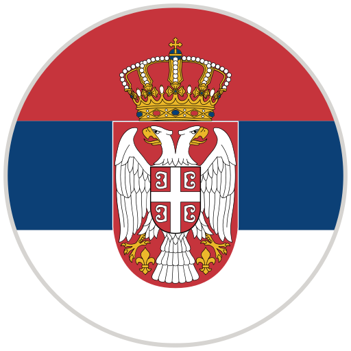

OLIVIER GIROUD
Edad: 37 años
Posicion: Delantero
Numero: 9
Estatura: 1.93 m
Peso: 91 kg
Fech. Nac.: 29/09/1986
Información:
Sus dobletes contra Inter y Sassuolo, sus goles contra Napoli y Lazio: el 19º Scudetto del AC Milan lleva su marca indeleble. También disfrutó de una campaña fantástica en 2022/23, terminando como el máximo goleador del Rossoneri en todas las competiciones con 13 goles en Serie A y cinco en la Champions League. Disputó 47 partidos y ofreció numerosas brillantes actuaciones.


LUKA JOVIĆ
Edad: 26 años
Posicion: Delantero
Numero: 15
Estatura: 1.81 m
Peso: 85 kg
Fech. Nac.: 22/12/1997
Información:
Llegó a Italia en julio de 2022, al Fiorentina, y contribuyó con 13 goles en 50 apariciones en una excelente temporada para el equipo de Italiano que los llevó a la final de la Coppa Italia y la Conference League.

RAFAEL LEÃO
Edad: 25 años
Posicion: Delantero
Numero: 10
Estatura: 1.88 m
Peso: 81 kg
Fech. Nac.: 09/06/1999
Información:
Sus actuaciones en el AC Milan también fueron reconocidas por Portugal, ya que logró su primera convocatoria con el equipo nacional en un amistoso contra Qatar el 9 de octubre de 2021. Anteriormente, había llegado a la final del Campeonato Europeo Sub-21 con la Seleção das Quinas.